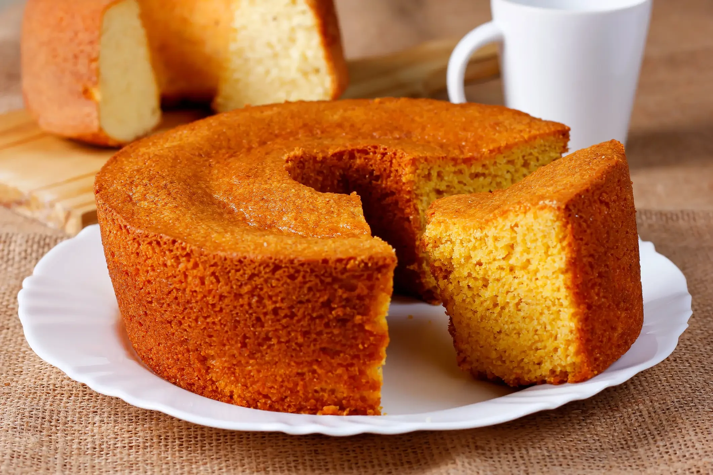

Pão de Queijo
Jamais coloque os ovos com a massa quente, senão eles cozinham e o pão não cresce!
Ingredientes
- 1 ovo inteiro
- 1 colher (café) de sal
- 1 xícara (chá) de leite
- 1 xícara (chá) de queijo minas meia cura ralado
- 1 xícara (chá) de polvilho azedo
Modo de Preparo
- Em uma vasilha, misture todos os ingredientes, menos o leite.
- Em seguida, vá adicionando o leite aos poucos, até que a massa fique homogênea.
- Modele os pães e coloque-os em forma untada com óleo.
- Levar ao forno pré aquecido por 40 minutos ou até dourar.
Bolo de fubá

Bolo de fubá é bom
Ingredientes
- 3 ovos
- 1 xícara de açúcar
- 1/2 xícara de óleo
- 1 xícara de leite
- 1 xícara de fubá
- 1/2 xícara de farinha de trigo
- 1 colher de sopa de fermento em pó
- 1 pitada de sal
- Opcional: erva-doce a gosto
Modo de Preparo
- Pré-aqueça o forno: 180°C. Unte e enfarinhe uma forma redonda (24 cm de diâmetro) ou retangular (20x30 cm). No liquidificador, coloque os ovos, o açúcar, o óleo e o leite. Bata bem até obter uma mistura homogênea. Adicione o fubá, a farinha de trigo, o sal e a erva-doce (se usar). Bata novamente até incorporar todos os ingredientes. Acrescente o fermento em pó e bata rapidamente, apenas para misturar. Despeje a massa na forma preparada e leve ao forno por cerca de 35-40 minutos, ou até que o bolo esteja dourado e firme ao toque. Espere esfriar um pouco antes de desenformar.
Suas Anotações
Clique aqui para adicionar as suas observações
sobre como ficou a sua fornada . . .